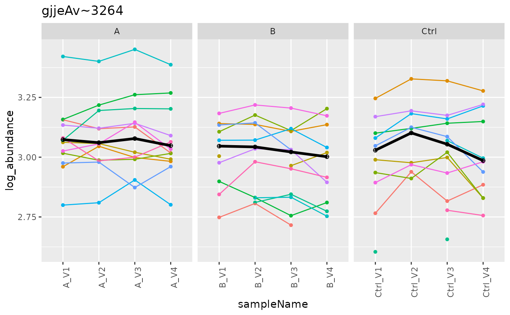

will replace make_DEA_report
will replace make_DEA_report
Public fields
prolfq_app_configProlfquAppConfig
lfq_data_peptideLFQData peptide level
lfq_dataLFQData
lfq_data_transformedtransformed LFQData
lfq_data_subsetsubset of LFQData
aggregatoraggregator
rowAnnotProteinAnnotation
contrastsvector with contrasts
FDR_thresholdfdr threshold
diff_thresholddiff_threshold
reference_proteinsreference proteins to use for internal normalization
formulamodel formula
formula_glm_peptideglm peptide formula
modelslist of fitted models
contrast_resultslist of contrast results
m1_linearlinearModel
m2_missingimputedModel
m3_mergedmergedModel
m4_glm_proteinm4_glm_protein
m4_glm_peptidem4_glm_peptide
default_modeldefault_model
Methods
Method new()
initialize DEAnalyse with data and configuration
Usage
DEAnalyse$new(
lfq_data_peptide,
rowAnnot,
prolfq_app_config,
contrasts,
default_model = "mergedModel"
)Examples
# example code
pep <- prolfqua::sim_lfq_data_peptide_config(Nprot = 100)
#> creating sampleName from fileName column
#> completing cases
#> completing cases done
#> setup done
pep <- prolfqua::LFQData$new(pep$data, pep$config)
pA <- data.frame(protein_Id = unique(pep$data$protein_Id))
pA <- pA |> dplyr::mutate(fasta.annot = paste0(pA$protein_Id, "_description"))
pA <- prolfquapp::ProteinAnnotation$new(pep, row_annot = pA, description = "fasta.annot")
#> Warning: no exp_nr_children column specified, computing using nr_obs_experiment function
GRP2 <- prolfquapp::make_DEA_config_R6()
GRP2$processing_options$diff_threshold <- 0.2
GRP2$processing_options$transform <- "robscale"
pep$factors()
#> # A tibble: 12 × 3
#> sample sampleName group_
#> <chr> <chr> <chr>
#> 1 A_V1 A_V1 A
#> 2 A_V2 A_V2 A
#> 3 A_V3 A_V3 A
#> 4 A_V4 A_V4 A
#> 5 B_V1 B_V1 B
#> 6 B_V2 B_V2 B
#> 7 B_V3 B_V3 B
#> 8 B_V4 B_V4 B
#> 9 Ctrl_V1 Ctrl_V1 Ctrl
#> 10 Ctrl_V2 Ctrl_V2 Ctrl
#> 11 Ctrl_V3 Ctrl_V3 Ctrl
#> 12 Ctrl_V4 Ctrl_V4 Ctrl
contrasts <- c("AVsC" = "group_A - group_Ctrl", BVsC = "group_B - group_Ctrl")
# DEAnalyse$debug("get_contrasts_glm_peptide")
# DEAnalyse$debug("build_model_glm_protein")
deanalyse <- prolfquapp::DEAnalyse$new(pep, pA, GRP2, contrasts)
deanalyse$lfq_data_peptide$hierarchy_counts()
#> # A tibble: 1 × 3
#> isotopeLabel protein_Id peptide_Id
#> <chr> <int> <int>
#> 1 light 100 350
deanalyse$cont_decoy_summary()
#> totalNrOfProteins percentOfContaminants percentOfFalsePositives
#> 1 100 0 0
#> NrOfProteinsNoDecoys
#> 1 100
deanalyse$prolfq_app_config$processing_options$remove_cont <- TRUE
deanalyse$remove_cont_decoy()
#> Joining with `by = join_by(protein_Id)`
#> INFO [2026-02-16 14:19:09] removing contaminants and reverse sequences with patterns: ^zz|^CON|Cont_^REV_|^rev_
deanalyse$aggregate()
#> INFO [2026-02-16 14:19:09] AGGREGATING PEPTIDE DATA: medpolish.
#> Column added : log_abundance
#> starting aggregation
#> Column added : exp_medpolish
#> INFO [2026-02-16 14:19:10] END OF PROTEIN AGGREGATION
pl <- deanalyse$get_aggregation_plots(exp_nr_children = 10)
#> Joining with `by = join_by(protein_Id)`
#> Warning: `aes_string()` was deprecated in ggplot2 3.0.0.
#> ℹ Please use tidy evaluation idioms with `aes()`.
#> ℹ See also `vignette("ggplot2-in-packages")` for more information.
#> ℹ The deprecated feature was likely used in the prolfqua package.
#> Please report the issue at <https://github.com/wolski/prolfqua/issues>.
#> Warning: Using `size` aesthetic for lines was deprecated in ggplot2 3.4.0.
#> ℹ Please use `linewidth` instead.
#> ℹ The deprecated feature was likely used in the prolfqua package.
#> Please report the issue at <https://github.com/wolski/prolfqua/issues>.
print(pl$plots[[3]])
#> Warning: Removed 11 rows containing missing values or values outside the scale range
#> (`geom_point()`).
#> Warning: Removed 9 rows containing missing values or values outside the scale range
#> (`geom_line()`).

deanalyse$transform_data()
#> INFO [2026-02-16 14:19:11] Transforming using robscale.
#> Column added : log2_exp_medpolish
#> data is : TRUE
#> Warning: Expected 1 pieces. Additional pieces discarded in 1200 rows [1, 2, 3, 4, 5, 6,
#> 7, 8, 9, 10, 11, 12, 13, 14, 15, 16, 17, 18, 19, 20, ...].
#> Joining with `by = join_by(protein_Id, sampleName)`
#> INFO [2026-02-16 14:19:11] Transforming data : robscale.
mod <- deanalyse$build_model_linear_protein()
#> INFO [2026-02-16 14:19:11] fitted model with formula : normalized_abundance ~ group_
#> Joining with `by = join_by(protein_Id)`
contlm <- deanalyse$get_contrasts_linear_protein()
merged <- deanalyse$get_contrasts_merged_protein()
#> determine linear functions:
#> get_contrasts -> contrasts_linfct
#> contrasts_linfct
#> Joining with `by = join_by(protein_Id, contrast)`
#> completing cases
#> AVsC=group_A - group_Ctrl
#> BVsC=group_B - group_Ctrl
#> AVsC=group_A - group_Ctrl
#> BVsC=group_B - group_Ctrl
#> AVsC=group_A - group_Ctrl
#> BVsC=group_B - group_Ctrl
#> Joining with `by = join_by(protein_Id, contrast)`
#> Joining with `by = join_by(protein_Id, contrast)`
stopifnot(nrow(merged$get_contrasts()) == 200)
stopifnot(nrow(merged$get_contrasts()) == 200)
# deanalyse$create_model_formula()
# deanalyse$build_model_glm_protein()
# deanalyse$build_model_glm_peptide()
xprot <- deanalyse$get_contrasts_glm_protein()
#> completing cases
#> INFO [2026-02-16 14:19:12] fitted model with formula : binresp ~ group_
#> Joining with `by = join_by(protein_Id)`
if(FALSE){
xprot$get_contrasts()
xprot$get_Plotter()$volcano()
xpep <- deanalyse$get_contrasts_glm_peptide()
xpep$get_Plotter()$volcano()
sr <- deanalyse$lfq_data_peptide$get_Summariser()
deanalyse$filter_contrasts()
xd <- deanalyse$filter_data()
xd <- deanalyse$contrasts_to_Grob()
bb <- deanalyse$get_boxplots()
bx <- deanalyse$get_boxplots_contrasts()
dev.off()
grid::grid.draw(bx$bxpl_grobs[[1]])
# deanalyse$write_boxplots_contrasts("test.pdf")
}